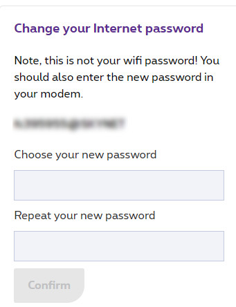

In some cases you'll handle the PPPoE connection in your router.
The main reason is to connect to the Proximus network from your router and let your personal hardware manage the DHCP.
If you know your login and password, it's really easy. But if like me, you lost your original password / don't remember it / never saved it in your favorite password tool / ... you're doomed. Or not.
Proximus made it simple, you can login on their website and in the MyProducts section you need to select your "Internet" product.
From there you'll be able to define a new password without the need to enter your old password.

When the password is changed, it will take effect within two hours.
My first error was to change it too in my modem -> No more Internet at home.
In fact you can use the old password as long as Proximus didn't validate your new password.
Two hours later... No Internet!
The WAF was aligned with the two hours but not with more.
I had two solutions:
- Try a new password on Proximus website (and wait two more hours)
- Contact the Support
I don't remember my web search but I found a ticket about the PPPoE connection with the Proximus modem and the new password rule.
In fact, the new password must be eight characters long and it must only contain alphanumeric characters.
The thing I didn't say is that I used a password generator to have something complex on my first try.
So before to call the Support, I changed my password to match the rule (on Proximus website and in my router) and it worked right away.
comments powered by Disqus